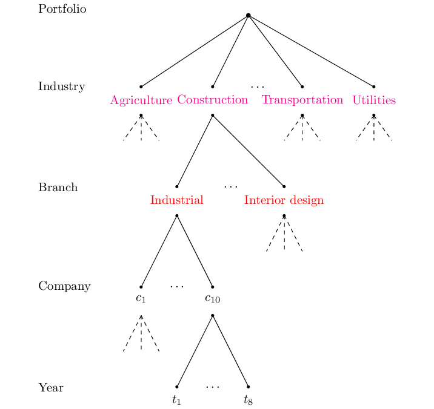
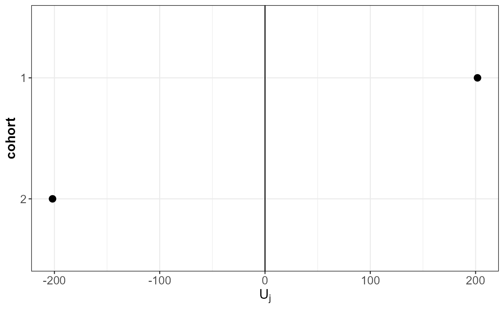
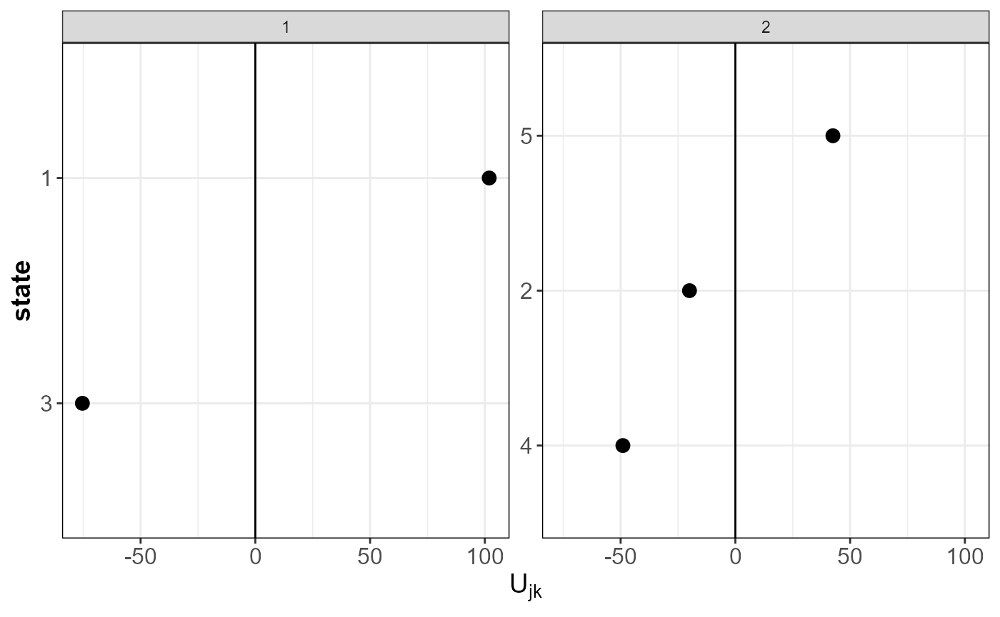

Introduction to actuaRE
Bavo DC Campo
2022-07-04
actuaRE.RmdHandling hierarchically multi-level factors using random effects models
Multi-level factors (MLFs) are nominal variables with too many levels for ordinary generalized linear model (GLM) estimation (Ohlsson and Johansson 2010). Within the machine learning literature, these type of risk factors are better known as high-cardinality attributes (Micci-Barreca 2001). This package focuses on MLFs that exhibit a hierarchical structure and a typical example hereof, within workers’ compensation insurance, is the NACE code. In our illustration, we work with a hierarchical MLF that has two hierarchical levels: industry and branch. Figure 1 visualizes this hierarchical structure with a hypothetical example.
Figure 1: Hierarchical structure of a hypothetical example
Which random effects models can we fit using actuaRE?
With the current version of the actuaRE package, you are able to fit random effects models with the following functional form
\[\begin{align*} g(E[Y_{ijkt} | U_j, U_{jk}]) &= \mu + \boldsymbol{x}_{ijkt}^\top \boldsymbol{\beta} + U_j + U_{jk} \\&= \zeta_{ijkt}.\\ \end{align*}\]
Here, \(Y_{ijkt}\) denotes the loss cost of risk profile \(i\) (based on the company-specific risk factors) operating in branch \(k\) within industry \(j\) at time \(t\). We calculate the loss cost as
\[\begin{align*} Y_{ijkt} = \frac{Z_{ijkt}}{w_{ijkt}} \end{align*}\] where \(Z_{ijkt}\) denotes the total claim cost and \(w_{ijkt}\) is an appropriate volume measure. \(g(\cdot)\) denotes the link function (for example the identity or log link), \(\mu\) the intercept, \(\boldsymbol{x}_{ijkt}\) the company-specific covariate vector and \(\boldsymbol{\beta}\) the corresponding parameter vector. With the model parameters \(\mu\) and \(\boldsymbol{\beta}\) we capture the company-specific effects. To assess the effect of the hierarchical MLF, we introduce the random effects \(U_j\) and \(U_{jk}\) which capture the unobservable effects of the industry and the branch in which the company operates. \(U_j\) denotes the industry-specific deviation from \(\mu + \boldsymbol{x}_{ijkt}^\top \boldsymbol{\beta}\) and \(U_{jk}\) denotes the branch-specific deviation from \(\mu + \boldsymbol{x}_{ijkt}^\top \boldsymbol{\beta} + U_{j}\). We assume that the random industry effects \(U_j\) are independent and identically distributed (i.i.d.) with \(E[U_j] = 0\) and \(Var(U_j) = \sigma_{I}^2\). Similarly, the random branch effects \(U_{jk}\) are assumed to be i.i.d. with \(E[U_{jk}] = 0\) and \(Var(U_{jk}) = \sigma_{B}^2\).
This package offers three different estimation methods to estimate the model parameters:
- Hierarchical credibility model (Jewell 1975)
- Combining the hierarchical credibility model with a GLM (Ohlsson 2008)
- Mixed models (Molenberghs and Verbeke 2005)
Just the code please
Example data set
To illustrate the functions, we make use of two different data sets. We illustrate the hierarchical credibility model of Jewell (Jewell 1975) using the Hachemeister (Hachemeister 1975) data set. The other functions make use of the dataCar data set.
Hierarchical credibility model
To estimate the parameters using the hierarchical credibility model, we use the function hierCredibility. By default, the additive hierarchical credibility model (Dannenburg, Kaas, and Goovaerts 1996) is fit
\[\begin{align*} E[Y_{ijkt} | U_j, U_{jk}] &= \mu + U_j + U_{jk}. \end{align*}\]
capture.output(library(actuaRE), file = tempfile()) # suppress startup message
#> Loading required package: magrittr
#> Loading required package: speedglm
#> Loading required package: Matrix
#> Loading required package: MASS
#> Loading required package: data.table
#> Loading required package: ggplot2
#> Warning: package 'ggplot2' was built under R version 4.1.3
#> Loading required package: knitr
#> Package 'actuaRE' version 0.1.0
#> This is version 0.1.0 of actuaRE
data("hachemeisterLong")
fitHC = hierCredibility(ratio, weight, cohort, state, hachemeisterLong)
fitHC
#> Call:
#> hierCredibility(Yijkt = ratio, wijkt = weight, sector = cohort,
#> group = state, data = hachemeisterLong)
#>
#>
#> Additive hierarchical credibility model
#>
#> Estimated variance parameters:
#> Individual contracts: 139120026
#> Var(V[jk]): 11628.45
#> Var(V[j]): 88476.11
#> Unique number of categories of cohort: 2
#> Unique number of categories of state: 5To fit the multiplicative hierarchical credibility model (Ohlsson 2005) \[\begin{align*}
E[Y_{ijkt} | \widetilde{U}_j, \widetilde{U}_{jk}] &= \tilde{\mu} \ \widetilde{U}_j \ \widetilde{U}_{jk}
\end{align*}\] you have to specify type = "multiplicative".
fitHCMult = hierCredibility(ratio, weight, cohort, state, hachemeisterLong, type = "multiplicative")
fitHCMultTo get a summary of the model fit, we use the summary function.
summary(fitHC)
#> Call:
#> hierCredibility(Yijkt = ratio, wijkt = weight, sector = cohort,
#> group = state, data = hachemeisterLong)
#>
#>
#> Additive hierarchical credibility model
#>
#> Estimated variance parameters:
#> Individual contracts: 139120026
#> Var(V[jk]): 11628.45
#> Var(V[j]): 88476.11
#> Unique number of categories of cohort: 2
#> Unique number of categories of state: 5
#>
#> Estimates at the cohort level:
#>
#> cohort zj Yjz_BarTilde qj Vj Uj
#> 1: 1 1.427755 1965.436 0.9157058 1946.859 201.8044
#> 2: 2 1.633248 1527.011 0.9255216 1543.250 -201.8044
#>
#> Estimates at the state level:
#>
#> cohort state wjk Yjk_BarTilde zjk Vjk Ujk
#> 1: 1 1 100155 2060.921 0.8932938 2048.750 101.89107
#> 2: 1 3 13735 1805.843 0.5344614 1871.491 -75.36785
#> 3: 2 2 19895 1511.224 0.6244749 1523.251 -19.99963
#> 4: 2 4 4152 1352.976 0.2576359 1494.229 -49.02155
#> 5: 2 5 36110 1599.829 0.7511373 1585.748 42.49796To obtain the fitted values, we use the fitted function
fitted(fitHC)
#> [1] 2048.750 2048.750 2048.750 2048.750 2048.750 2048.750 2048.750 2048.750
#> [9] 2048.750 2048.750 2048.750 2048.750 1871.491 1871.491 1871.491 1871.491
#> [17] 1871.491 1871.491 1871.491 1871.491 1871.491 1871.491 1871.491 1871.491
#> [25] 1523.251 1523.251 1523.251 1523.251 1523.251 1523.251 1523.251 1523.251
#> [33] 1523.251 1523.251 1523.251 1523.251 1494.229 1494.229 1494.229 1494.229
#> [41] 1494.229 1494.229 1494.229 1494.229 1494.229 1494.229 1494.229 1494.229
#> [49] 1585.748 1585.748 1585.748 1585.748 1585.748 1585.748 1585.748 1585.748
#> [57] 1585.748 1585.748 1585.748 1585.748and we use ranef to extract the estimated random effects.
ranef(fitHC)
#> $sector
#> cohort Uj
#> 1: 1 201.8044
#> 2: 2 -201.8044
#>
#> $group
#> cohort state Ujk
#> 1: 1 1 101.89107
#> 2: 1 3 -75.36785
#> 3: 2 2 -19.99963
#> 4: 2 4 -49.02155
#> 5: 2 5 42.49796We can inspect the estimated random effects using the function plotRE.
ggPlots = plotRE(fitHC, plot = FALSE)
ggPlots[[1]]
ggPlots[[2]]
To obtain predictions for a new data frame, we use the predict function.
Combining the hierarchical credibility model with a GLM
To allow for company-specific risk factors, we extend the multiplicative hierarchical credibility model to \[\begin{align*}
E[Y_{ijkt} | \widetilde{U}_j, \widetilde{U}_{jk}] &= \tilde{\mu} \ \gamma_{ijkt} \ \widetilde{U}_j \ \widetilde{U}_{jk} = \gamma_{ijkt} V_{jk}
\end{align*}\] where \(\gamma_{ijkt}\) denotes the effect of the company-specific covariates. To estimate this model using Ohlsson’s GLMC algorithm (Ohlsson 2008), we use can either use the function hierCredGLM or hierCredTweedie. hierCredGLM allows the user to specify the power parameter \(p\). Conversely, hierCredTweedie estimates the power parameter \(p\) along with the other parameters using the cpglm function from the cplm package.
data("dataCar")
fit = hierCredGLM(Y ~ area + (1 | VehicleType / VehicleBody), dataCar, weights = w)
#>
Running algorithm.
summary(fit)
#> Call:
#> hierCredGLM(formula = Y ~ area + (1 | VehicleType/VehicleBody),
#> data = dataCar, weights = w)
#>
#>
#> Combination of the hierarchical credibility model with a GLM
#>
#> Estimated variance parameters:
#> Individual contracts: 4288715
#> Var(V[jk]): 349.22
#> Var(V[j]): 628.379
#> Unique number of categories of VehicleType: 2
#> Unique number of categories of VehicleBody: 9
#>
#> Results contract-specific risk factors:
#>
#> Generalized Linear Model of class 'speedglm':
#>
#> Call: speedglm(formula = FormulaGLM, data = data, family = tweedie(var.power = p, link.power = 0), weights = data$wijkt, model = T, y = T, fitted = T)
#>
#> Coefficients:
#> ------------------------------------------------------------------
#> Estimate Std. Error t value Pr(>|t|)
#> (Intercept) 5.63582 0.08857 63.6304 0.00000 ***
#> areaB 0.04804 0.13070 0.3676 0.71321
#> areaC 0.07686 0.11758 0.6537 0.51333
#> areaD -0.18602 0.15779 -1.1789 0.23844
#> areaE 0.13070 0.16694 0.7829 0.43370
#> areaF 0.46429 0.18616 2.4941 0.01263 *
#>
#> -------------------------------------------------------------------
#> Signif. codes: 0 '***' 0.001 '**' 0.01 '*' 0.05 '.' 0.1 ' ' 1
#>
#> ---
#> null df: 67565; null deviance: 3314186;
#> residuals df: 67560; residuals deviance: 3298572;
#> # obs.: 67566; # non-zero weighted obs.: 67566;
#> AIC: NA; log Likelihood: ;
#> RSS: 66083459; dispersion: 978.1447; iterations: 7;
#> rank: 6; max tolerance: 1.84e-15; convergence: TRUE.We use the same syntax as used by the package lme4 to specify the model formula. Here, (1 | VehicleType / VehicleBody) specifies a random effect \(U_j\) for VehicleType and a nested random effect \(U_{jk}\) for VehicleBody. We extract the estimated parameters using fixef (company-specific effects) and ranef (random effects).
fixef(fit)
#> (Intercept) areaB areaC areaD areaE areaF
#> 5.63581573 0.04803789 0.07686029 -0.18601585 0.13069527 0.46428870
ranef(fit)
#> $sector
#> VehicleType Uj
#> 1: Common vehicle 0.9563139
#> 2: Uncommon vehicle 1.0514319
#>
#> $group
#> VehicleType VehicleBody Ujk
#> 1: Common vehicle HBACK 1.0249732
#> 2: Common vehicle SEDAN 0.9526347
#> 3: Common vehicle UTE 0.9970046
#> 4: Uncommon vehicle COUPE 1.0232527
#> 5: Uncommon vehicle HDTOP 1.0064355
#> 6: Uncommon vehicle MIBUS 1.0041799
#> 7: Uncommon vehicle PANVN 1.0023171
#> 8: Uncommon vehicle STNWG 0.9833459
#> 9: Uncommon vehicle TRUCK 1.0076538In addition, the same functions as before can be used.
Mixed models
Alternatively, we can rely on the mixed models framework (Molenberghs and Verbeke 2005) to estimate the model parameters. Here, we can use the function to estimate a Tweedie generalized linear mixed model. Fitting the model, however, takes quite some time. We can speed up the fitting process by providing some initial estimates and this is exactly what the tweedieGLMM function does! Nonetheless, even with the initial estimates the fitting process does take some time (approximately 5 minutes using Windows 10 with an intel i7 and 32 gigabytes of RAM).
fitGLMM = tweedieGLMM(Y ~ area + (1 | VehicleType / VehicleBody), dataCar, weights = w, verbose = TRUE)Balance property
For insurance applications, it is crucial that the models provide us a reasonable premium volume at portfolio level. Hereto, we examine the balance property (Bühlmann and Gisler 2006)(Wüthrich 2020) on the training set. That is, \[\begin{equation} \begin{aligned} \sum_{i, j, k, t} w_{ijkt} \ Y_{ijkt} &= \sum_{i, j, k, t} w_{ijkt} \ \widehat{Y}_{ijkt}\\ \end{aligned} \end{equation}\] where \(i\) serves as an index for the tariff class. GLMs fulfill the balance property when we use the canonical link (see (Wüthrich 2020)). For LMMs and hence, the hierarchical credibility model this property also holds. Conversely, most GLMMs do not have this property. To regain the balance property, we introduce a quantity \(\alpha\) \[\begin{equation} \begin{aligned} \alpha &= \frac{\sum_{i, j, k, t} w_{ijkt} \ Y_{ijkt}}{\sum_{i, j, k, t} w_{ijkt} \ \widehat{Y}_{ijkt}}\\ \end{aligned} \end{equation}\] which quantifies the deviation of the total predicted damage from the total observed damage. In case of the log link, we can then use \(\alpha\) to update the intercept to \(\hat{\mu} + \log(\alpha)\) to regain the balance property.
By default, the intercept is updated when fitting models using hierCredGLM, hierCredTweedie and tweedieGLMM. If you do not wish to update the intercept, you can set the argument balanceProperty = FALSE.
fitnoBP = hierCredGLM(Y ~ area + (1 | VehicleType / VehicleBody), dataCar, weights = w, balanceProperty = F)
#>
Running algorithm.
yHatnoBP = fitted(fitnoBP)
w = weights(fitnoBP, "prior")
y = fitnoBP$y
fitBP = hierCredGLM(Y ~ area + (1 | VehicleType / VehicleBody), dataCar, weights = w, balanceProperty = T)
#>
Running algorithm.
yHatBP = fitted(fitBP)
sum(w * y) / sum(w * yHatnoBP)
#> [1] 1.001388
sum(w * y) / sum(w * yHatBP)
#> [1] 1Alternatively, you can use the build-in function BalanceProperty. You can use this function with any object that has the slots fitted, weights and y.
BalanceProperty(fitnoBP)
#> Warning in BalanceProperty(fitnoBP):
#> Balance property is not satisfied.
#>
#> Ratio total observed damage to total predicted damage: 1.001388
BalanceProperty(fitBP)
#>
#> Balance property is satisfied.